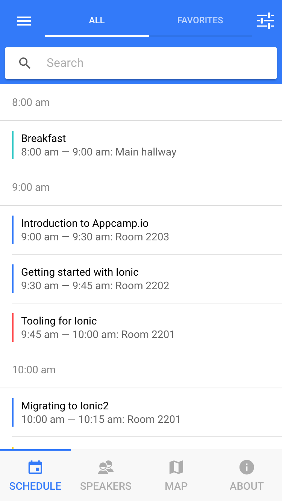

Building StencilJS with TypeScript
About Me
- Senior Developer at Ionic
- One of the creators of StencilJS

I  JavaScript
JavaScript
I  TypeScript
TypeScript
I TypeScript


What is Ionic?
Android

iOS
What is Ionic?
- Framework for mobile applications
- v1 AngularJS / v2 Angular
- TypeScript All the Things
The JS ecosystem is changing
- "What is the best framework?"
The JS ecosystem is changing
- "Which framework do you prefer?"
- Ionic components should work with any framework or with no framework
- Write once use everywhere
Our Answer was Web Components

Why Build Stencil
- Others could value our abstractions
- Stencil is a 'compiler' that generates Web Components

- Developer Experience(DX) and performance
Stencil
Stencil DX
- TypeScript
- Reactive Data-binding
- Async rendering queue
- Virtual DOM
- JSX
Stencil Components
- Be lazy loaded
- Be type safe
- Be as tiny as possible
- Be future proof
Stencil Components

Stencil Components
Stencil Components
Stencil Components
Stencil Components
Stencil Compiler
- Our laundry list of requirements meant we needed to write a compiler
- TypeScript powers the Stencil Compiler
How the sausage gets made
Metadata Collection
Metadata Collection
Power of Transforms
Power of Transforms
Power of Transforms
Power of Transforms
Seamless* Upgrades
- Codemods are possible when you control the output structure
Docs generation
- Metadata + JSDoc comments becomes docs
We'll do it live. 
Next Steps
- More documentation
- Framework Integration Tests
Thank You!